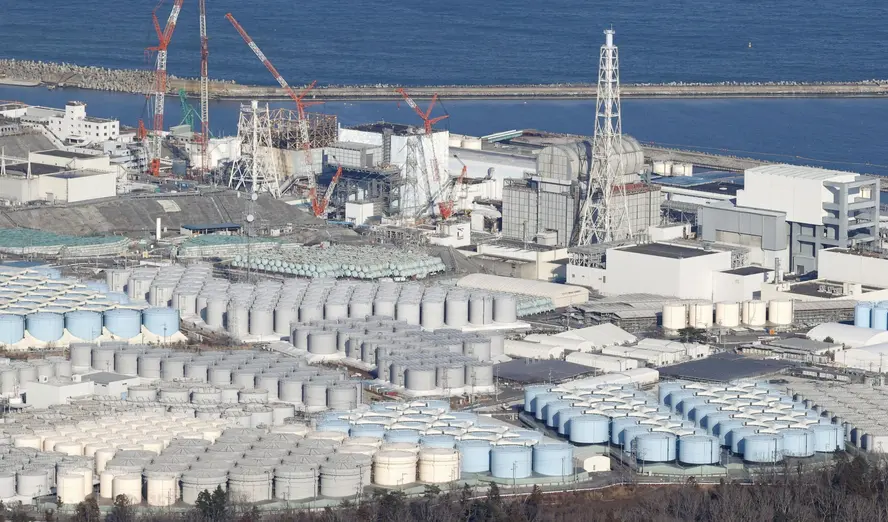
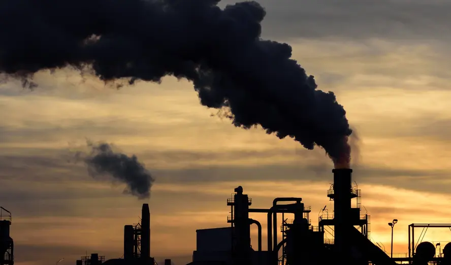
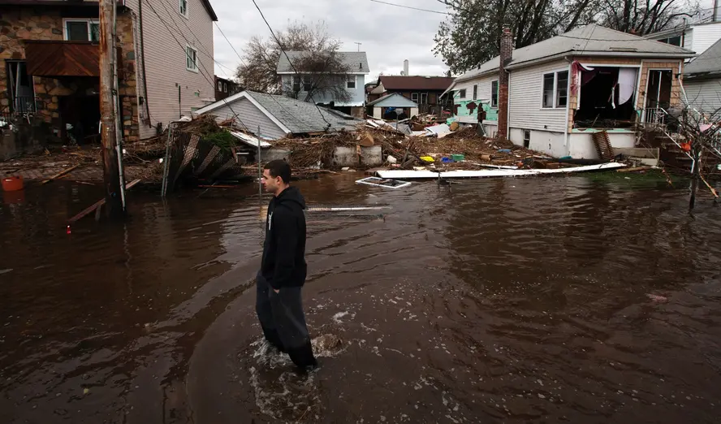
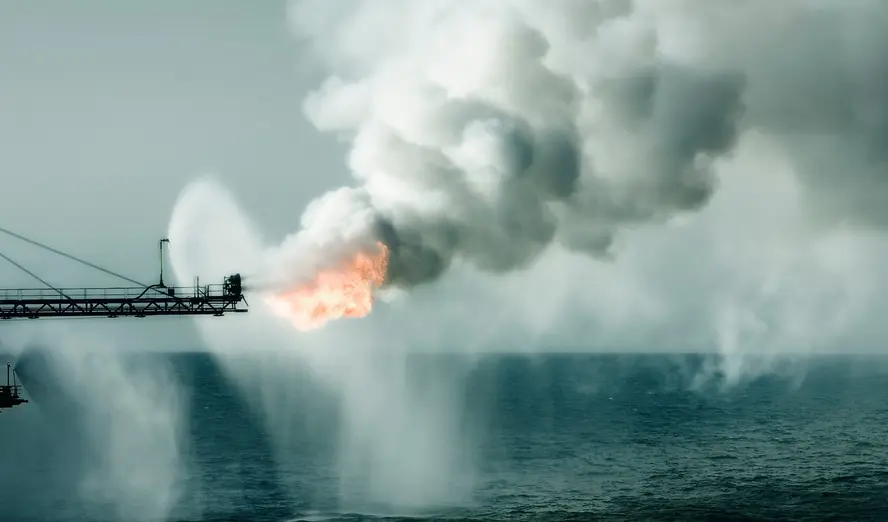
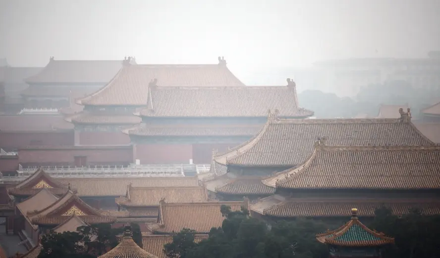
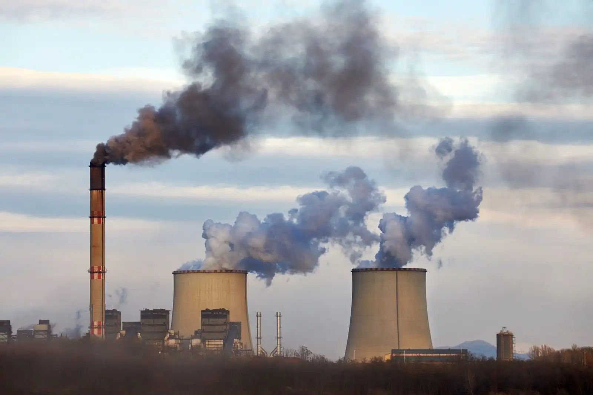
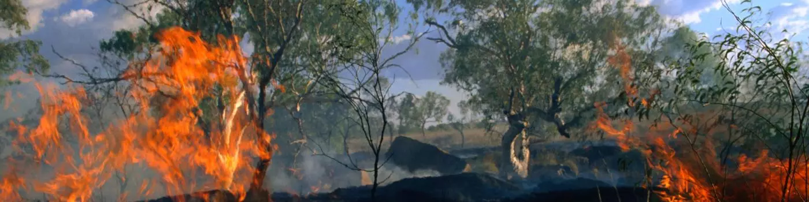
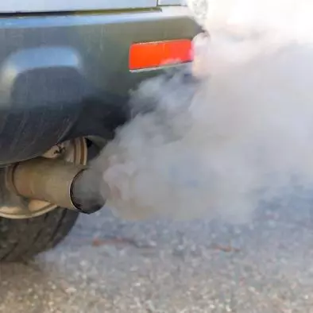

How Latin America and the Caribbean Could Benefit from Reducing Emissions
n news that surprised many, the president of COP28, Sultan Al Jaber of United Arab Emirates countered the idea of “a phase-out of fossil fuel that will allow for sustainable socioeconomic development,”
stating that such a path would “take the world back into caves.” And while his remarks may be controversial, there is still considerable debate over how to get to net-zero emissions while promoting
economic development in poorer countries left behind by fossil-fueled growth.
But what if Latin America and the Caribbean—which has the highest income inequality of any region in the world—could gain from reaching net-zero emissions? Our new study shows that there is a whopping $2.7 trillion in potential benefits over the next 25 years, net of costs of decarbonization.
While old carbon-based development patterns are familiar, they are not particularly good. Those paths have led to poor air and water quality, high congestion, damaged landscapes and ecosystems, and societies that serve the interests of a few at the expense of many. There is growing recognition that a better path embraces livable cities, preserves ecosystems, provides healthier food for all people—and meets climate goals to boot.
While old carbon-based development patterns are familiar, they are not particularly good.
Share on Twitter
My colleagues and I estimated for the first time the economic difference for Latin America and the Caribbean between a path that embraces traditional development and one that pursues net-zero emissions with actions throughout the economy—from improving the energy efficiency of industrial plants, to capturing biogas from waste and agricultural facilities, to shifting agricultural patterns towards lower-carbon foods.
While there are many specific paths countries in the region can take toward economic development, three changes are critical for decarbonization: producing electricity and hydrogen from renewables, electrifying transport, and returning the land to a carbon sink by protecting forests and shifting agricultural patterns to support afforestation.
With such an approach, we found that benefits could potentially be as high as $4 trillion—from energy cost savings throughout the economy, avoided pollution, productivity and health gains, ecosystem services, and a host of other benefits—and eclipsed the $1.3 trillion in technical investment costs for a net of $2.7 trillion.
Critically, these economic benefits are robust to uncertainty. Across a thousand decarbonization scenarios we analyzed, 90 percent of our scenarios resulted in positive net benefits—with a median benefit of $1 trillion.
A host of fiscal, regulatory, information, and other barriers stand in the way of changes that would lead to greener development.
Share on Twitter
Given these findings, it is logical to ask why such transformations are not occurring at a pace that the tremendous benefits might warrant. Unfortunately, a host of fiscal, regulatory, information, and other barriers—from fossil fuel subsidies to urban environments that favor private vehicles over walking and biking to a lack of financing—stand in the way of changes that would lead to greener development. In addition, many of the largest costs are borne upfront by the people who have to make changes—the owners of factories and farms—while many of the benefits such as fuel cost savings accrue over time or like cleaner air and water are diffusely enjoyed by the broader society.
It seems clear from our research that there needs to be a different debate happening at COP28: How can countries break down regulatory barriers, secure climate financing, and engage leaders, stakeholders, and citizens at every level to dispel the false choice between a cleaner future and a brighter future.
2024.03.29 | Post by Dushan
Japan Risks Reputation in Oceania with Fukushima Discharge
Japan's decision last month to begin discharging treated radioactive wastewater into the Pacific Ocean from its destroyed Fukushima Daiichi Nuclear Power Plant is fairly unpopular in Oceania, potentially damaging Tokyo's reputation in this increasingly strategic region.
Nuclear fallout is a particularly sensitive issue throughout the Pacific Islands as radioactivity from dozens of American, British, and French nuclear weapon tests during the Cold War continue to cause health defects to this day. Japan will release wastewater over the next 30 years, and the International Atomic Energy Agency (IAEA) in July declared the process to be consistent with international safety standards.
However, that has not stopped the Pacific Island states from expressing their concerns. On 15 September, the Pacific Islands Forum (PIF) Foreign Ministers Meeting noted that “the South Pacific Nuclear Free Zone Treaty (Rarotonga Treaty) provides the context for our engagement on nuclear issues…[it] records the region's 'determination to keep the region free of environmental pollution by radioactive wastes and other radioactive matter.'” In January, prior to the IAEA's announcement, PIF Secretary General Henry Puna stated that “Our region is steadfast that there be no discharge until all parties verify it is safe…we must prevent action that will lead or mislead us towards another major nuclear contamination disaster at the hands of others.” Puna has not changed his view on the matter.

At an individual level, most Pacific Island leaders have been outspokenly against Tokyo's plan. Vanuatu's foreign minister, for example, said in August “[We are] urging polluters not to discharge the treated water in the Pacific Ocean until and unless the treated water is incontrovertibly proven to be safe to do so, and [to] seriously consider other options.” Another member of the Melanesian Spearhead Group, the Solomon Islands, said at the U.N. it was “appalled” by the Japanese plan. France's territory of New Caledonia is opposed as well, and it would be hard to imagine that semi-autonomous French Polynesia—one of the main sites of Cold War nuclear testing—would be satisfied with Tokyo's plan either.
At an individual level, most Pacific Island leaders have been outspokenly against Tokyo's plan.
Share on Twitter
Other Pacific Island nations have also expressed concerns. Niue, for example, observed in August that the discharge would be “a transboundary and intergenerational issue.” Meanwhile, Tuvalu is reportedly “concerned, dismayed, disappointed, and kind of surprised” that Tokyo would do such a thing in spite of its own first-hand experience with nuclear material. And in the North Pacific, the Marshall Islands, which bore the brunt of Cold War nuclear testing by outside powers, argued in February that nuclear contamination continued to be a “real and grave threat” to the Pacific.
Although no Pacific Island nation is in favor of Japan's discharge, there are several that might be considered “satisfied” by Tokyo's reassurances that the plan is safe. Cook Islands, which will chair the PIF summit later this year, noted “the discharge meets international safety standards.” Palau contended “if it's acceptable to their [Japanese] people, it should be acceptable to all of us.”
Meanwhile, in Fiji, which serves as the PIF headquarters, Prime Minister Sitiveni Rabuka complained that protests in Suva last month were ill-informed because the discharge was happening “into Japan's own backyard, 7,306 kilometers from Fiji.” He also affirmed his support for Japan having met IAEA standards.
2024.03.29 | Post by Dushan
{{ comment.author }} -
{{ comment.content }}How Could the United States Incentivize Investors to Decarbonize the Economy?
The U.S. Securities and Exchange Commission (SEC) last month proposed (PDF) requiring publicly traded companies to disclose their climate-related risks and greenhouse gas emissions. If the proposal is enacted, companies might have to hire third-party auditors to verify emissions not just from their own operations, but also from supply chains and customers' end use.
The SEC wants this transparency and consistency in reporting so that investors might make risk-informed decisions. The information would allow investors to direct capital away from products and services that are carbon-intensive or at risk of damage from climate change impacts. While there are plenty of objections, if this goes through it might over time shift billions toward firms that are helping reduce climate change or making moves toward becoming net-zero emitters themselves. Mandatory disclosures also could reduce greenwashing and opportunistic marketing.
The SEC proposal comes on the heels of the Biden administration's goal to reduce greenhouse gas emissions by 50 percent from 2005 levels by 2030 and Russia's invasion of Ukraine, which has destabilized energy markets. It also, ironically, follows Sarah Bloom Raskin's withdrawal from consideration of her nomination to the Federal Reserve Board after her comments—that the Fed take the economic risks of climate change into account when setting monetary policy—rankled too many senators on the Banking

In recent times the problem of plastic pollution in our seas and oceans has caught the attention of the world, especially after the dramatic amount of this material that currently pollutes the marine ecosystems of the planet. It is said that 8 million tons of plastic annually reach our oceans, mostly in the form of small plastic particles that are then ingested by marine animals. In fact, a study published in 2015 in the journal Proceedings of the National Academy of Sciences already announced that 90% of seabirds in the world have ingested and currently accumulate plastic waste in their digestive system.
This situation becomes more alarming if we take into account the estimates made by the study "The new plastic economy" presented at the World Economic Forum in Davos, Switzerland, in early 2016. In this study it was concluded that to continue the current level of plastic consumption in the world, by 2050 the weight in tons of plastic waste in the oceans will be higher than the weight of all fish on the planet.
Where does this plastic waste come from?
Nowadays we can find plastics in all the oceans of the world, from the Arctic to the Antarctica. It is even believed that only the Pacific Ocean contains a quantity of plastic waste that covers an area equivalent to twice the size of the United States.
2024.03.29 | Post by Dushan
{{ comment.author }} -
{{ comment.content }}How Citizen Scientists Are Protecting Their Communities
lizabeth Yeampierre watched tree branches whip past her windows on the evening of October 29, 2012, as Superstorm Sandy slammed into New York City. She had spent years warning of the dangers one big storm could unleash in her community. Now, here it was.
Yeampierre is an icon in the working-class neighborhood of Sunset Park, Brooklyn, a champion of the people and the place. She knew as well as anyone that hundreds of industrial sites operated in the community, some just feet from homes. She didn't think they were ready for a storm like this.
Some 200 miles away, Ramya Chari watched the storm unfold on television from her home in Washington, D.C. As a policy researcher at RAND, she specializes in environmental risk and community health. She typed out a quick email to community groups in the storm's wake: “If there's anything we can do to help …”

As the skies cleared and the floodwaters receded, Sunset Park got to work. Small business owners and local volunteers scraped up debris and pumped out basements, often working with no more protection than some old shoes and grubby clothes. A concern went through the community: What, exactly, was in that debris and floodwater?
Sunset Park is the largest waterfront industrial area in New York City, a place where heavy industry coexists with apartment blocks and old brownstones. Even before the storm, community activists had organized “toxicity tours” to show outsiders what it was like to live near a waste-transfer station or a power plant. All it would take, they warned, was one big storm to flood those facilities and wash their pollutants into the community.
By the time Chari sent her email, community volunteers had already started going block by block through Sunset Park, mapping every industrial and chemical site. In time, they identified more than 2,200 locations storing more than 800 different chemicals. They were not at all convinced when limited testing after Sandy appeared to show no reason for concern. They wanted to better understand and model the risks themselves, to help the community protect itself. That was where Chari came in.
2024.03.29 | Post by Dushan
{{ comment.author }} -
{{ comment.content }}Global Methane Initiative: Converting Harmful Emissions to Usable Energy
Carbon dioxide has garnered the most attention in the climate change debate because it accounts for the bulk of greenhouse gas emissions. But there is good reason to worry about methane.
Although it is short-lived, methane has more than 20 times the global warming potential of carbon dioxide. Unfortunately, methane is also the primary component of natural gas and a by-product of decomposition from such common sources as landfills, agricultural activities, and wastewater treatment. Capturing and putting to use methane emissions bring parallel benefits: They help minimize overall methane emissions, and they offer potentially cost-effective energy sources for heating, cooking, and electricity generation—a particular concern in developing countries.

The Global Methane Initiative (GMI) is a voluntary program that promotes cost-effective, near-term methane recovery through partnerships between developed and developing countries, with participation from the private sector, development banks, and nongovernmental organizations. Its goals are to raise global awareness about methane-recovery challenges and solutions, reduce institutional barriers to the implementation of these efforts, and promote learning and knowledge—sharing among participants and local communities. GMI's work spans five sectors: agriculture, coal mines, landfills, oil and gas systems, and wastewater systems.
GMI is a major part of the U.S. strategy to address global greenhouse gas emissions and their impact on climate change. Through GMI, the U.S. government (primarily through the State Department and the Environmental Protection Agency) supports such activities as feasibility studies for new initiatives, demonstration projects, conferences, information dissemination, and technology transfer.
A recent RAND study examined the impact of the State Department's contributions to the program—specifically, the additional benefits of the department's financial and nonfinancial contributions above and beyond other sources of support for GMI. Although it was difficult to assess some of the program's indirect outcomes, the study found evidence that GMI's activities contributed to emissions reductions and that the State Department played a major role in those activities.
For example, a review of five years of quantitative data on 542 GMI activities showed an overall reduction of 203 million metric tons of CO2 equivalent, equal to about one-third of U.S. methane emissions in 2010. Seventy-four percent of this reduction was traced to activities supported by the U.S. government. The State Department's financial support ($27 million) accounted for slightly more than half of U.S. funding for the program.
Interviews and site visits also pointed to the value of State Department expertise in such areas as diplomacy and international relations. Its contributions supported training sessions and workshops that reached at least 6,000 people in the four years examined. These GMI-funded activities helped educate government and industry leaders and increased networking opportunities within and across sectors. For example, India's Coal Mine Methane/Coalbed Methane Clearinghouse was established to connect local companies with potential investors in methane capture projects. At the same time, improved technology and inspection protocols helped oil and gas companies detect and repair leaks, improving plant efficiency and considerably reducing methane emissions. In the Philippines, GMI worked with existing agricultural cooperatives to educate farmers about methane recovery and set up demonstration sites for tube-bag biodigester systems.
2024.03.29 | Post by Dushan
{{ comment.author }} -
{{ comment.content }}China Has Done More About Pollution Than You Think (But It Must Do More)
The country's dismal air isn't news to those who have to breathe it, or to the international community. But recent reports about the “doomsday” smog in Shenyang were alarming. The northeastern city saw the harmful pollutant PM 2.5 at a level 40 times greater than what the World Health Organization considers safe.
And last month, as representatives from all over the world concluded their climate summit in Paris, officials in Beijing issued “red alerts” for smog. Schools were closed, and drivers were told to stay off the road every other day, depending on whether their license plate ended with an even or odd number.

It might not be doomsday, but this underscores China's struggle to provide its citizens with blue skies. Although it is not obvious from recent headlines, China's central and local governments have done more to curb the nation's air pollution over the past two years than casual observers may realize. The State Council mandated reduction goals for each of the three key air pollution prevention and control regions. It is further calling for a cap on China's coal consumption. Each region has proposed its own action plan and taken an inventory of pollution sources. All regions have demonstrated the will to cut air pollution levels. These are encouraging steps.
But China still faces problems in implementing and enforcing these proposals. A follow-up investigation of Shenyang's “doomsday” air reveals two examples of this: Many small industrial boilers have not installed pollution control equipment, and large coal-fired power plants were not operating their pollution control units properly.
These problems have many causes. First, it's difficult to catch non-compliance, especially among small polluters. For example, millions of small industrial boilers power or heat China's buildings. Monitoring their emissions is nearly impossible. The central and local governments have mandated closing down these small polluters, but the sheer number makes verification of enforcement difficult, too. The news out of Shenyang last month shows that China hasn't found an effective solution to enforce regulations even at large plants, where continuous monitoring equipment should have been installed.
Second, the Chinese government has not set up national systems to collect accurate pollution data. The fact that it had to issue a correction about how much coal China burns reflects the government's failure to track small industrial boilers, coal mines, and other industrial activities. But it deserves some credit for collecting better data, correcting historical statistics, and taking a step toward more transparent data-sharing.
Third, it is cheap for polluters to violate environmental regulations. In large part, this is because victims of pollution in China are rarely compensated. But the government is taking steps to change this. To improve public participation in environmental pollution monitoring and reduction, a 2014 law proposed by the Ministry of Environmental Protection (MEP) gave non-governmental groups the right to take part in investigating pollution cases. The MEP has also heightened enforcement, including the introduction of daily fines that accumulate, rather than one-time punishments. According to the MEP, during the first seven months of 2015 under the new law, the government charged more than 282 million yuan (almost 44 million dollars) in daily fines.
2024.03.29 | Post by Dushan
{{ comment.author }} -
{{ comment.content }}China Can Fix Its Severe Pollution Problem
China's economic transformation over the last three decades can be measured not just in yuan, but also in the amount of potentially deadly air pollution the Chinese people inhale every day. In virtually every major urban area across China, concentrations of air pollutants exceed standards recommended by the World Health Organization. And while the Chinese government recognizes this and has responded, more could be done and at a cost that is hardly too dear. Our research shows that an investment of $215 billion annually could substantially reduce pollution, lessen its drag on productivity, spare the lungs of countless people, and save lives.
While $215 billion is certainly not a small amount, it shrinks when compared to the impact air pollution has on the Chinese economy. Health impacts and lost labor productivity costs are estimated at 6.5 percent of China's gross domestic product. Applying that figure to China's 2012 GDP of $8.2 trillion implies that reducing air pollution in China to levels considered acceptable by WHO would yield annual benefits of more than $500 billion.

The first step and the one with the highest payoff would be to substitute natural gas for coal for residential and commercial use. Boilers and stoves fueled by coal, wood, or wastes are notorious for emitting pollution. The detrimental health effects of emissions from these sources on health and life expectancy in China, especially northern China, have been well documented. At a cost of between $32 billion and $52 billion a year, this step would appear to be a bargain.
Next, China should commit to the more costly step of shutting down half of its coal-fueled power plants and replacing them with cleaner electricity-generating technologies that rely on natural gas, nuclear, and renewables for fuel.
Coal is used to generate a very large share of China's electricity, 79 percent in recent years. The U.S., by comparison, generates about 40 percent of its electricity from coal. To reach healthy air quality levels, China would have to replace a substantial amount of coal-fired electric power, especially in or near major population centers.
Replacing half of China's coal-fired electric power generation with renewables or nuclear power, would cost approximately $184 billion per year. But targeting China's worst performing coal-fired power plants could reduce total national emissions of particulates and sulfur dioxide by well over 25 percent.
A third step would be accelerating the scrapping of so-called “yellow tag” motor vehicles, meaning older, highly polluting cars and trucks. China is already moving in this direction. More than a third of these vehicles that were on the road in 2012 are to be scrapped by the end of 2015. Still, this program should be accelerated as soon as possible through a buy-back program. Such a program has been successful in Dongguan, Guangdong Province.
2024.03.29 | Post by Dushan
{{ comment.author }} -
{{ comment.content }}Oil and Gas Production Linked to $77B in Annual Health Care Costs
Buckle up, environmentalists, as we delve into an alarming trend in the United States, where oil and gas production levels are soaring, despite global shifts towards cleaner energy. While we’re all concerned about the climate impacts of fossil fuels, this surge in production is also sounding the alarm bells for public health experts.
A pioneering study led by the Boston University School of Public Health, the University of North Carolina Institute for the Environment, PSE Healthy Energy, and the Environmental Defense Fund has shed light on the health impacts of air Pollution from oil and gas operations. Published in Environmental Research: Health, this research provides a wake-up call for us all.

The study uncovers the shocking truth that air pollution from the oil and gas sector is damaging our air quality and hitting our health and wallets hard. In 2016 alone, emissions from U.S. oil and gas production led to 7,500 excess deaths, 410,000 asthma attacks, and 2,200 new cases of childhood asthma. When you tally up the related hospitalizations and health issues, we’re looking at a whopping $77 billion in annual health costs triple the estimated climate impact costs of methane emissions from these operations.
2024.03.29 | Post by Dushan
{{ comment.author }} -
{{ comment.content }}What does a hotter planet mean for wildfires?
Climate change affects wildfires by exacerbating the hot, dry conditions that help these fires catch and spread. As global temperatures rise, we expect the size, frequency and severity of wildfires to increase in the years ahead. Already, the average wildfire season in the western U.S. is over three months longer than it was a few decades back. In places from California to the Siberian Arctic, were seeing record-breaking wildfires.

What causes wildfires?
Wildfires are unplanned fires that burn in forests, grasslands and other ecosystems, and they can start with a natural event like a lightning strike, or as the result of human activity. Campfires, discarded cigarettes, and electrical equipment like downed power lines all spark wildfires.
But climate change can make environments more susceptible to burning. Increasing severe heat and drought due to climate change can fuel wildfires.
Hotter temperatures evaporate more moisture from soil and vegetation, drying out trees, shrubs and grasses and turning leaf litter and fallen branches into kindling.
In times of drought, trees that are stressed by a lack of water may also become more vulnerable to insects and diseases that can weaken or kill them, creating more fuel for fires.
And in the western U.S., snowpacks are shrinking and melting earlier in the year, which makes forests more flammable by reducing the water available for vegetation.
Fire is a natural phenomenon that serves important ecological purposes, clearing dead and diseased plants from some forests, for example, and even helping some plants reproduce.
But a rapidly warming planet — along with a history of short-sighted forest management practices and land use decisions that push development into the wilderness — is contributing to more destructive wildfires.
Fighting wildfires by fighting climate change
Extreme wildfires are devastating communities and ecosystems.
We must work together to fight these fires by curbing the greenhouse gas emissions that are warming our planet.
2024.03.29 | Post by Dushan
{{ comment.author }} -
{{ comment.content }}Speak now or forever hold your breath
Right now, almost every vehicle on U.S. roads emits tailpipe pollution.
That means every time you idle in heavy traffic — or spend time in a bustling city or near a major transportation hub — youre being exposed to a steady stream of pollutants, including soot, carbon dioxide, nitrous oxides and carbon monoxide.
This tailpipe pollution is harmful for many reasons. Exposure to high levels is linked to asthma, heart disease, even cancer. Scientists from the Environmental Defense Fund found that even small increases in exposure are associated with increased health care costs. And transportation is the biggest source of planet-warming pollution in the United States.
While $215 billion is certainly not a small amount, it shrinks when compared to the impact air pollution has on the Chinese economy. Health impacts and lost labor productivity costs are estimated at 6.5 percent of China's gross domestic product. Applying that figure to China's 2012 GDP of $8.2 trillion implies that reducing air pollution in China to levels considered acceptable by WHO would yield annual benefits of more than $500 billion.

Now, the U.S. Environmental Protection Agency has proposed two rules that would limit the amount of tailpipe pollution that automakers can release into the atmosphere. The rules would dramatically clean up the air we breathe while reducing almost 10 billion tons of climate pollution.
Tell the EPA to cut tailpipe pollution and green-light clean cars!
If the standards are adopted, the EPA estimates that two-thirds of new passenger cars and trucks sold in the U.S. would be free of tailpipe pollution by 2032, and up to half of certain types of new medium- and heavy-duty vehicles — including urban delivery trucks, freight trucks and buses — would be zero-emitting.
“In addition to its massive climate benefits, this proposal can make a huge difference for urban air pollution, reducing premature deaths and asthma attacks,” says Environmental Defense Fund's President Fred Krupp.
It’s not just environmentalists — automakers are on board with lower emissions too
The proposals have found support not only from health and environmental advocates, but from automakers as well. Thats due, in part, to the investments that car manufacturers have already made in zero-emission vehicles.
2024.03.29 | Post by Dushan
{{ comment.author }} -
{{ comment.content }}
{{ comment.author }} -
{{ comment.content }}